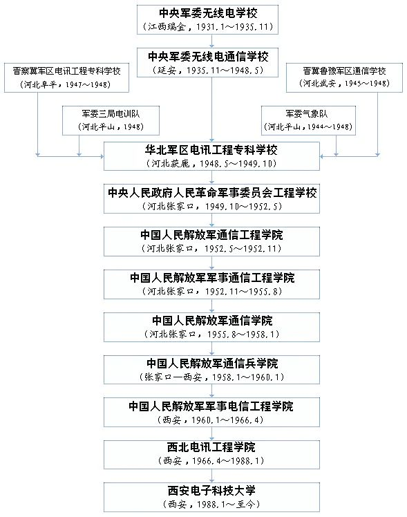
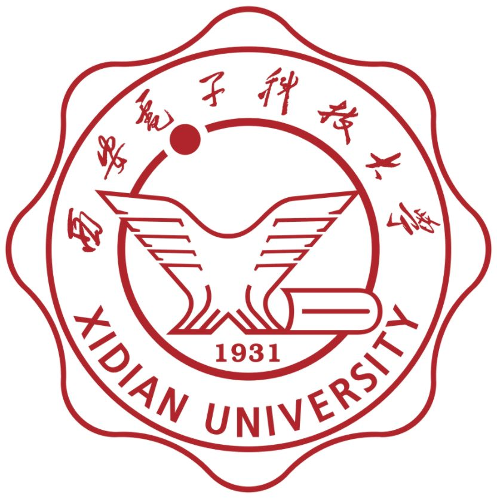
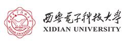

西安电子科技大学
西安电子科技大学（英语：Xidian
University），简称西电，是一所位于中华人民共和国陕西省西安市的公立大学，隶属于教育部，学校是1959年中央确定的首批20所全国重点大学，国家首批“211工程”和“优势学科创新平台项目”重点建设高校，“111计划”重点建设高校，入选“2011计划”，是中国最早的2所国防工业重点军校之一（哈军工、西军电并称）。
历史沿革
建国前
- 1931年2月10日，红一方面军第一期无线电训练班，在江西省宁都县小布镇开学。
- 1931年，中央军委无线电学校于江西瑞金洋溪组建，王诤任校长，是毛泽东等老一辈革命家亲手创建的中国共产党及红军第一所工程技术学校。
- 1932年，学校迁至瑞金附近下路头，后又迁至坪山岗，改名为红军通信学校。
- 1934年，增设高级班，负责轮训干部。
- 1935年，中央红军开始长征，通信学校代号为红星第三大队。8月，红星第三大队同四方面军报务训练班合并，恢复为通信学校。后同陕北的无线电学校合并，组建为军委无线电通信学校，学校地点位于瓦窑堡九沟台，后迁至延安裴庄、三原云阳镇。
- 1937年1月，军委无线电通信学校随党中央迁入延安，在延安川口、盐店子长期办学，通称“延安通校”。
- 1941年，毛主席为学校院刊《通信战士》题词：“你们是科学的千里眼顺风耳”。
- 1942年，改名为“电信工程专门学校”，专业设有：电信工程队、有线电队、干部队、机务班等。
- 1944年，中央军委气象队创建。
- 1948年，中央军委三局电讯队创建。后中央军委无线电通信学校、晋冀鲁豫军区电讯工程专科学校、晋冀鲁豫军区通信学校、中央军委气象队、中央军委三局电讯队合并组建华北军区电讯工程专科学校，执行师级权限，下分三个大队。
- 1949年7月，学校从获鹿县迁至张家口，改建为中央军委工程学校。11月27日举行开学典礼。
建国初期
- 1952年5月，中央军委命令，将中央军委工程学校一部改为中国人民解放军通信工程学院，二部改为中国人民解放军外语学院，三部改为中国人民解放军机要干部学校迁至长春。后大连工学院电讯系主体（今大连理工大学）、西南通信学校工程系并入中国人民解放军通信工程学院。
- 1955年，中国人民解放军军事通信工程学院更名中国人民解放军通信学院。
迁址西安
- 1958年，迁址西安，中国人民解放军通信学院更名中国人民解放军通信兵学院。
- 1959年，被中央确定为首批20所全国重点大学之一。
- 1960年1月，中国人民解放军通信兵学院更名中国人民解放军军事电信工程学院(西军电)，成为解放军历史上规模最大的现代化军事工程技术学校。
- 1963年9月1日，由通信兵划归国防科委领导。
改制地方
- 1966年4月，转为地方建制的普通高校，更名西北电讯工程学院。
- 1980年，电子工业部作出“西电援建桂电，成电援建杭电”的决定，西电先后派出3批教师共122人援建桂电，其中6人担任桂电校领导。
- 1988年1月，定为现名，是为西安电子科技大学。

学科建设与科学研究
院系设置
截至2019年9月，学校设有18个学院，开设59个本科专业，覆盖工学、理学、管理学、文学、经济学等8大学科门类。
- 通信工程学院
- 电子工程学院
- 计算机科学与技术学院
- 机电工程学院
- 物理与光电工程学院
- 经济与管理学院
- 数学与统计学院
- 人文学院
- 外国语学院
- 微电子学院
- 生命科学技术学院
- 空间科学与技术学院
- 先进材料与纳米科技学院
- 网络与信息安全学院
- 人工智能学院
- 马克思主义学院
- 国际教育学院
- 网络与继续教育学院
重点实验室
国家重点实验室
- 综合业务网理论及关键技术国家重点实验室
- 雷达信号处理国家重点实验室
- 天线与微波技术国家重点实验室
- 宽带隙半导体技术国家重点实验室
教育部重点实验室
- 智能感知与图像理解教育部重点实验室
- 计算机网络与信息安全教育部重点实验室
- 宽禁带半导体材料与器件教育部重点实验室
- 电子装备结构设计教育部重点实验室
- 电子信息攻防对抗与仿真技术教育部重点实验室
- 超高速电路设计与电磁兼容教育部重点实验室
省部级重点实验室
- 无线通信重点实验室
- 计算机输入/输出重点实验室
- 电子对抗重点实验室
- 电子机械重点实验室
- 无线电物理重点实验室
- 微波通信技术重点实验室
- 软件系统工程重点实验室
- 生物医学工程重点实验室
- 电子系统集成设计技术重点实验室
- 微电路可靠性技术重点实验室
- 智能材料与传感器重点实验室
- 计算机网络与信息安全重点实验室
- 通用电子仪器及测量重点实验室
- 新型半导体材料与器件重点实验室
- 新型激光器件与光信息处理重点实验室
- 数学建模重点实验室
异地研究院
| 研究院名称 |
成立时间 |
| 西电深圳研究院 |
2000年 |
| 西电宁波信息技术研究院 |
2012年 |
| 西电昆山研究生院 |
2013年 |
| 西电芜湖研究院 |
2017年 |
| 西电青岛计算技术研究院 |
2019年 |
| 西电广州研究院 |
2020年 |
| 西电杭州研究院 |
2021年 |
校园风光
校园文化
校徽

学校校徽以西安电子科技大学简称的拼音头字母简写“XD”为主体构型，主体构型下为建校年份（1931）。校徽内环为一条电子旋绕轨迹，内环外上书毛体校名“西安电子科技大学”，下为学校英文名称“XIDIAN UNIVERSITY”。
校训
厚德、求真、砺学、笃行
校歌
《与共和国同行》
星星之火，照耀着我们，照耀着我们的忠诚。
红色电波，辉煌着我们，我们的传统。
肩负使命，千锤百炼，我们和共和国，我们和共和国同行。
团结勤奋，求实创新，厚德求真，力学笃行。
我们是光荣的西电科大人。
向着太阳拥抱光明，向着太阳拥抱光明，永远向着太阳。
艰苦奋斗，传承着我们，传承着我们的校风。
英才摇篮，奋发着我们，我们的豪情。
开拓创新，走向未来，我们和共和国，我们和共和国同行。
绿色校园，百年树人，时代青年，勇攀高峰。
我们是新世纪西电科大人。
祖国强盛民族复兴，祖国强盛民族复兴，铸造祖国强盛。

↑TOP↑